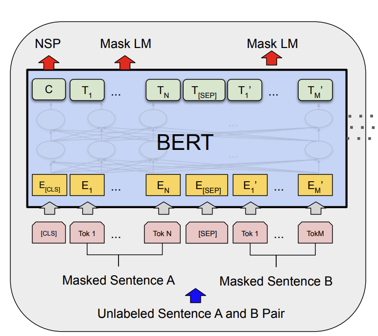

# CMSC 25700/35100: ## Natural Language Processing ## Lecture 9: Pretraining and Fine-tuning <p style="text-align: center;"> <strong>Chenhao Tan</strong><br/> University of Chicago<br/> @ChenhaoTan, @chenhaotan.bsky.social<br/> chenhao@uchicago.edu </p> <a href="https://github.com/uchicago-nlp-course/winter-2025-students/issues/1">Submit Music Recommendations</a>, kudos to Mina Lee <br> <a href="https://github.com/uchicago-nlp-course/winter-2025-students/issues/2">Submit jokes</a> </p>
## Logistics * Project - You do not have to work on different ideas - In fact, I encourage you to work on similar ideas - Walk through the most recent example
## Lecture Outline 1. Decoder-only Pretraining (GPT-style) 2. Finetuning Pretrained Models 3. Other Architectures and Objectives
## Lecture Outline 1. Decoder-only Pretraining (GPT-style) 2. <span style="opacity: 0.3;">Finetuning Pretrained Models</span> 3. <span style="opacity: 0.3;">Other Architectures and Objectives</span>
## Ingredient 1: Pretraining Data The model learns from raw text. More data, more knowledge. | Model | Year | Training Data | |-------|------|---------------| | GPT-1 | 2018 | BooksCorpus (7K books) | | GPT-2 | 2019 | WebText (40GB) | | GPT-3 | 2020 | 570GB (web, books, Wikipedia) | | LLaMA | 2023 | 1.4T tokens (diverse sources) | Trend: web-scale, diverse, deduplicated corpora Some open datasets: - <a href="https://blog.eleuther.ai/common-pile/">The Common Pile</a> - <a href="https://github.com/allenai/dolma3/">Dolma 3</a> from Olmo
## Data Quality Matters Common pretraining data sources: - Web crawls (Common Crawl, filtered) - Books (BooksCorpus, Gutenberg) - Wikipedia - Code (GitHub) - Academic papers, forums, etc. Key preprocessing: deduplication, filtering, toxicity removal Data mix ratios affect model behavior
## Discussion: Data - What kinds of biases might web-crawled data introduce? - Should copyrighted books be included in training data? - How does the data mix affect what the model is good at?
## Ingredient 2: Training Objective Language modeling: predict the next token $$\mathcal{L} = -\sum_t \log P(x_t | x_{<t})$$ Given all previous tokens, predict what comes next. This single objective is enough to learn syntax, semantics, facts, and reasoning.
## Why Next-Token Prediction Works To predict the next word well, the model must learn: - Syntax: grammatical structure - Semantics: word meaning and relationships - World knowledge: facts about entities - Reasoning: logical patterns in text "Compression is intelligence" -- the better you predict, the more you understand.
## Ingredient 3: Architecture Generative Pre-trained Transformer (GPT) Architecture: Transformer decoder (causal / unidirectional) Each token can only attend to previous tokens (causal mask). | Model | Layers | Dim | Heads | Parameters | |-------|--------|-----|-------|------------| | GPT-1 | 12 | 768 | 12 | 117M | | GPT-2 | 48 | 1600 | 25 | 1.5B | | GPT-3 | 96 | 12288 | 96 | 175B | <p class="citation">Radford et al. (2018)</p>
## Scaling Laws Performance improves predictably with: 1. More parameters (bigger models) 2. More data (more tokens) 3. More compute (longer training) These follow power-law relationships. Implication: we can predict how good a model will be before training it. <p class="citation">Kaplan et al. (2020)</p>
## Quiz: Objective and Architecture In a causal (decoder-only) Transformer, can the token at position 5 attend to the token at position 8? - A) Yes, all tokens attend to all other tokens - B) No, causal masking only allows attending to earlier positions - C) Yes, but only in the first layer - D) It depends on the number of attention heads
## Answer: Objective and Architecture B) No, causal masking only allows attending to earlier positions The causal mask sets attention weights to $-\infty$ for all positions $j > i$. Position 5 can attend to positions 1 through 5, but not 6, 7, 8, etc. This holds in every layer, regardless of the number of heads.
## Ingredient 4: Tokenizer ### The Vocabulary Problem Traditional approach: fixed vocabulary from training data Problems: - Novel words at test time -> UNK - Misspellings -> UNK - Morphological variations -> many separate tokens - Languages with rich morphology -> huge vocabularies
## Subword Tokenization Key idea: Learn a vocabulary of word pieces Common words: kept as single tokens Rare words: split into subword units Example: "unhappiness" -> ["un", "happiness"] or ["un", "happ", "iness"]
## Byte-Pair Encoding (BPE) Algorithm: 1. Start with character vocabulary + end-of-word symbol 2. Find most frequent adjacent pair 3. Merge pair into new token 4. Repeat until desired vocabulary size <p class="citation">Sennrich et al. (2016)</p>
## BPE Example Corpus: "low lower lowest" | Iteration | Vocabulary | Most Frequent | |-----------|------------|---------------| | 0 | l, o, w, e, r, s, t | (l, o) | | 1 | l, o, w, e, r, s, t, lo | (lo, w) | | 2 | l, o, w, e, r, s, t, lo, low | (low, e) | | ... | ... | ... |
## Quiz: Tokenization A BPE tokenizer with 50K tokens encounters the word "unfathomableness" for the first time. What happens? - A) It outputs UNK - B) It splits the word into known subword pieces (e.g., "un", "fath", "om", "able", "ness") - C) It adds "unfathomableness" to the vocabulary - D) It skips the word entirely
## Answer: Tokenization B) It splits the word into known subword pieces BPE applies its learned merge rules greedily. Even if "unfathomableness" was never seen during tokenizer training, it gets broken into subwords that are in the vocabulary. The character-level base vocabulary guarantees that any string can be represented -- no UNK needed.
## Lecture Outline 1. <span style="opacity: 0.3;">Decoder-only Pretraining (GPT-style)</span> 2. Finetuning Pretrained Models 3. <span style="opacity: 0.3;">Other Architectures and Objectives</span>
## What is Finetuning? Finetuning takes a pretrained model and continues training on a new, typically narrower distribution of data. What changes from pretraining: 1. Architecture: Reuse pretrained model (no design from scratch) 2. Parameters: Initialize with pretrained weights (not random) 3. Data: Use task-specific dataset (not broad pretraining data) 4. Hyperparameters: Lower learning rate, fewer epochs
## Pretraining vs Finetuning | Component | Pretraining | Finetuning | |-----------|-------------|------------| | Architecture | Designed from scratch | Reused | | Parameters | Random init | Pretrained weights | | Data | Broad, diverse | Narrow, task-specific | | Learning Rate | Higher (e.g., 6e-4) | Lower (e.g., 1e-5) | | Training Time | Days to weeks | Hours to days |
## The Narrower Distribution Pretraining: Broad distribution - Web text, books, code - Many topics, styles, formats - Learn general language Finetuning: Narrow distribution - Specific domain (medical, legal) - Specific format (Q&A, dialogue) - Specific style or behavior
## Finetuning is For Form, Not Facts Finetuning doesn't teach new knowledge! Instead, it amplifies existing priors and shapes how the model expresses what it already knows. - Teaching style, format, behavior - Guiding the model to choose among known answers - Injecting new factual knowledge? (use retrieval for that) - Learning new skills? (unlikely) <p class="citation">Gekhman et al. (2024)</p>
## Why Finetuning Works This Way Model capacity is mostly fixed: - The vast majority of what the model "knows" comes from pretraining A small dataset can't override pretraining: - A few thousand examples can't rewrite billions of parameters What finetuning CAN do: - Adjust the output distribution (which answers to favor) - Learn task-specific formatting (dialogue structure, code style) - Emphasize certain behaviors (helpfulness, refusal patterns)
## Quiz: Finetuning You finetune GPT on 5,000 medical Q&A pairs. The model now answers medical questions in the right format. What happened? - A) The model learned medicine during finetuning - B) The model already had medical knowledge from pretraining; finetuning shaped how it presents answers - C) The model memorized the 5,000 examples - D) The model's architecture changed to support medical reasoning
## Answer: Finetuning B) The model already had medical knowledge from pretraining; finetuning shaped how it presents answers The model encountered medical text during pretraining on web data, books, and Wikipedia. Finetuning on 5,000 examples is too little data to teach medicine from scratch, but enough to teach the model the Q&A format and which knowledge to surface. This is "form, not facts."
## Finetuning Strategies Full finetuning: - Update all parameters - Best performance - Need to store full model copy per task Feature extraction (linear probing): - Freeze pretrained weights - Only train a task-specific head - Fast but lower performance
## LoRA: Low-Rank Adaptation Key idea: The weight updates during finetuning have low rank. Instead of updating the full weight matrix $W \in \mathbb{R}^{d \times k}$: $$W' = W + \Delta W$$ Decompose the update as a low-rank product: $$W' = W + BA$$ where $B \in \mathbb{R}^{d \times r}$, $A \in \mathbb{R}^{r \times k}$, $r \ll d, k$ <p class="citation">Hu et al. (2021)</p>
## LoRA: How It Works For each attention weight matrix (Q, K, V, O): ``` Original: x -> W @ x (frozen, no gradient) LoRA: x -> W @ x + B @ A @ x (only A, B are trained) ``` During training: freeze $W$, only learn $A$ and $B$ During inference: merge $W' = W + BA$ (no extra latency!) Initialization: $A$ ~ Gaussian, $B$ = 0 (so $\Delta W = 0$ at start)
## LoRA: Parameter Count Example: $W \in \mathbb{R}^{4096 \times 4096}$, rank $r = 8$ | | Parameters | |---|---| | Full $W$ | $4096 \times 4096 = 16.8$M | | LoRA ($A + B$) | $4096 \times 8 + 8 \times 4096 = 65$K | | Reduction | ~0.4% of original | Apply to all attention matrices in all layers: - 7B model -> \~4M trainable params (\~0.06%)
## Why Low Rank? Empirical finding: weight changes during finetuning are low-rank. Intuition: finetuning makes small, structured adjustments to the pretrained weights, not random changes. The pretrained model already has the right "features." Finetuning just reweights them. This connects back to "finetuning is for form, not facts."
## LoRA: Practical Benefits 1. Storage: store one base model + many small LoRA adapters - Base model: 14 GB, each adapter: ~10 MB 2. Serving: swap adapters at runtime for different tasks 3. Training: much less GPU memory needed 4. Performance: comparable to full finetuning on many tasks This is how platforms like Hugging Face serve thousands of model variants.
## Quiz: LoRA $W \in \mathbb{R}^{4096 \times 4096}$ has 16.8M parameters. With LoRA rank $r = 8$, how many trainable parameters does one LoRA adapter add? - A) 16.8M (same as the original matrix) - B) 65K ($4096 \times 8 + 8 \times 4096$) - C) 32K ($4096 \times 8$) - D) 8 (just the rank)
## Answer: LoRA B) 65K ($4096 \times 8 + 8 \times 4096$) LoRA adds two matrices: $B \in \mathbb{R}^{4096 \times 8}$ and $A \in \mathbb{R}^{8 \times 4096}$. That is $32{,}768 + 32{,}768 = 65{,}536$ parameters -- about 0.4% of the original 16.8M. This is why LoRA adapters are so small (roughly 10 MB for an entire model vs. 14 GB for full weights).
## Practical Takeaways: Finetuning 1. Use the same training recipe, but with pretrained weights and narrower data 2. Lower learning rates to avoid catastrophic forgetting 3. LoRA is often sufficient and much cheaper than full finetuning
## Lecture Outline 1. <span style="opacity: 0.3;">Decoder-only Pretraining (GPT-style)</span> 2. <span style="opacity: 0.3;">Finetuning Pretrained Models</span> 3. Other Architectures and Objectives
The Original Transformer
The Transformer was introduced for machine translation as an encoder-decoder model. - Encoder: processes the source sentence (bidirectional attention) - Decoder: generates the target sentence (causal attention + cross-attention) <p class="citation">Vaswani et al. (2017)</p>
## Cross-Attention In each decoder layer: 1. Causal self-attention over target tokens 2. Cross-attention: decoder attends to encoder outputs - $Q$ = decoder hidden states - $K, V$ = encoder outputs 3. Feed-forward network $$\text{CrossAttn}(Q_{dec}, K_{enc}, V_{enc})$$ This lets the decoder "look at" the full source sentence.
Encoder-Only Architecture
No decoder. No causal masking. Each position attends to ALL positions (bidirectional). - Good for classification, NER, sentence embeddings - Example: BERT

## Architecture Comparison | Architecture | Attention | Example | Primary Use | |-------------|-----------|---------|-------------| | Encoder-Decoder | Bidirectional + Causal + Cross | Original Transformer, T5 | Translation, Seq2Seq | | Encoder-only | Bidirectional | BERT | Classification, NER | | Decoder-only | Causal | GPT, LLaMA | Generation | Modern LLMs are mostly decoder-only: simpler, scales well, flexible enough for all tasks.
## Alternative Objective: Masked Language Modeling GPT predicts the next token (left-to-right). BERT predicts masked tokens (bidirectional): Input: "The [MASK] sat on the mat" Output: Predict "cat" Both left and right context inform the prediction. <p class="citation">Devlin et al. (2018)</p>
## MLM vs Language Modeling | | Language Modeling (GPT) | Masked LM (BERT) | |---|---|---| | Direction | Left-to-right | Bidirectional | | Context | Only previous tokens | All other tokens | | Generation | Yes (autoregressive) | No | | Use case | Text generation, chat | Classification, NER, embeddings |
## Key Takeaways 1. Next-token prediction is a powerful learning signal 2. LoRA makes finetuning practical at scale 3. Decoder-only is the dominant architecture today
# Questions?